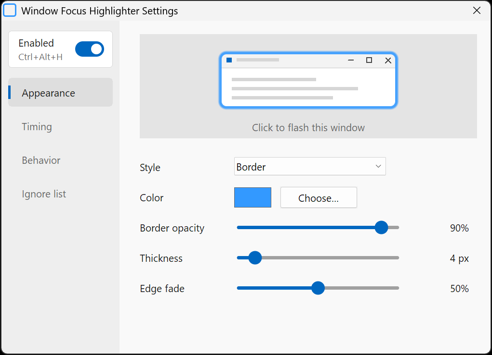
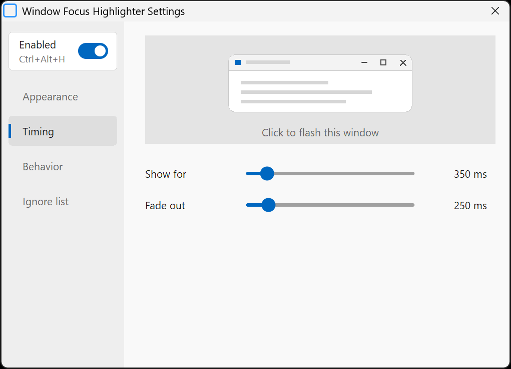
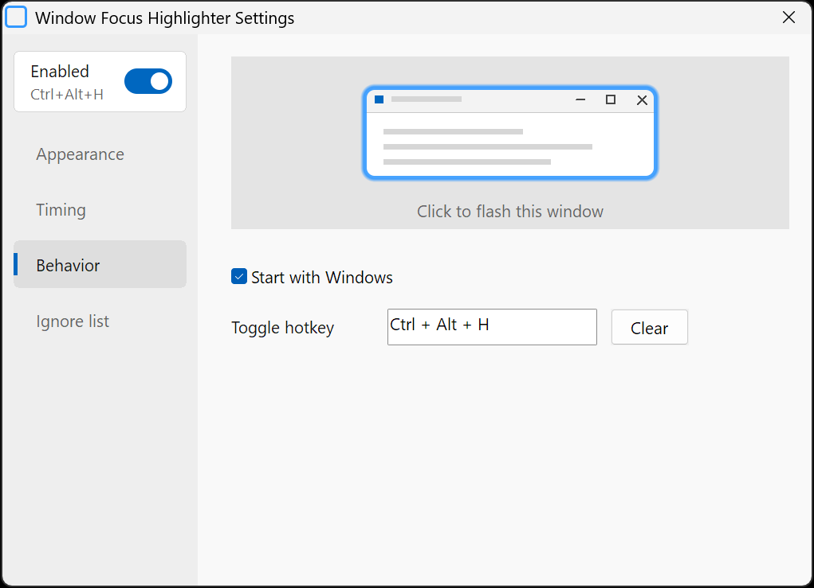

Window Focus Highlighter
A tiny Windows tray app that highlights whichever window just got focus
Download GitHub~50 KB · no installer
Alt+Tab or click a window, and it gets highlighted.
See it in action
Change the look
Border
Tint
Border + tint
Settings


